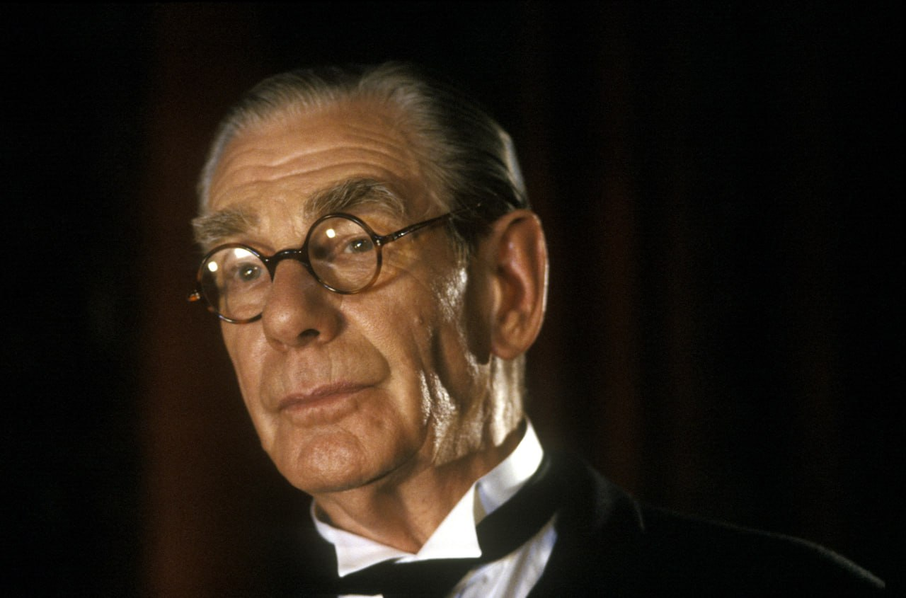
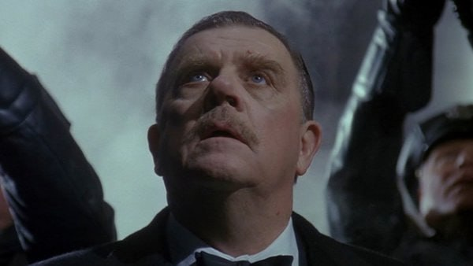
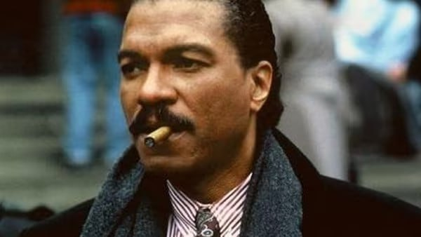

Багатий підприємець, який удень — мільйонер і філантроп, а вночі — герой, що бореться зі злочинністю в Готемі. Відрізняється стриманістю, розумом і внутрішньою боротьбою між обов’язком і особистим життям.
Колишній гангстер, який після нещасного випадку перетворюється на божевільного злочинця з постійною усмішкою. Його мета — посіяти хаос у Готемі та знищити Бетмена. Один із найяскравіших антагоністів у кінематографі.
Журналістка та фотокореспондентка, яка досліджує діяльність Бетмена. Смілива, розумна й не боїться ризикувати заради правди. Також є романтичним інтересом Брюса Вейна.
  Вірний дворецький і друг Брюса Вейна. Він допомагає Бетмену зберігати його таємницю, підтримує його морально та дбає про нього як про сина.
Начальник поліції Готема. Один із небагатьох, хто довіряє Бетмену та співпрацює з ним у боротьбі проти злочинності. Символ чесності й справедливості у місті.
Прокурор Готема, який прагне очистити місто від корупції законними методами. Його персонаж у цьому фільмі ще не стає Дволиким (Two-Face), але показує, яким він був до перетворення.